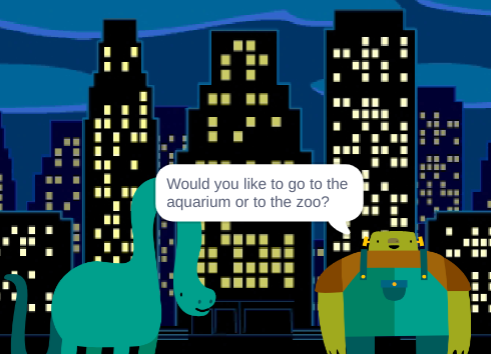
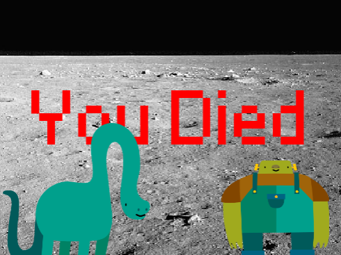
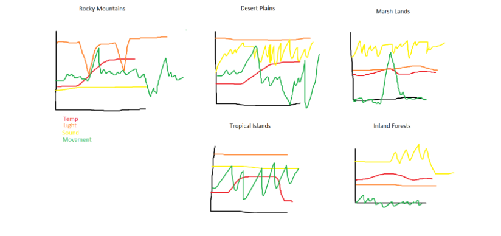
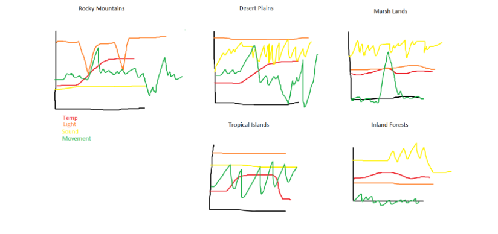
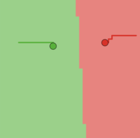

1: ページ1
2: 2ページ
3: 3ページ
˜”*°•.˜”*°• My Portfolio •°*”˜.•°*”˜
˜”*°•.˜”*°• Project 1 •°*”˜.•°*”˜


We created a ice cream maker game, thast asks the user how many scoop they would like, as well as what
flavor they would like. We set a max of 11 scoops if you go over that number, our code will print
"Thats too many!" As for flavors, we have 11 set flavors. If you input a flavor that is not on the
list, our code prints "Thats not on the menu."
˜”*°•.˜”*°•Project 2 •°*”˜.•°*”˜


Me and Amanda created the Ping Pong Game. The game is simple, you have two paddles.
Player a is the red paddle and Player b is the blue paddle.You use w,s and the up and down arrows
to move the paddles.The objective is to score more points that your opponent. A fun feature or
game has is that the ball chages color every time it bounces off a paddle. "
˜”*°•.˜”*°•Project 3 •°*”˜.•°*”˜


Me and my partners created the game "Dino is the City". Our Game uses animations ,multiple backgrounds,
change of costumes ,events ,procedures and inputs. Our charecters Dino and Frank go on an adventure. They
go to diffrents places togther and try not to die.
˜”*°•.˜”*°• Project 4 •°*”˜.•°*”˜
 

Our forth project was "Rover Phone Home". Me and my partner were given 4 sets of data
and where to use this information to guess where the rover was. We graphed our data and did
our best to match it up to the 4 sensors given. Moment was easy to figure out because it was
the only one that would make sense to dip into the negatives. Going down or left could be
considered negative. Sound was the other faily easy set of data to figure out due to its
spikes in the graph. Light and tempurature were on the harder side to figure out. With what we knew,
we matched up our data the best we could with the regions given to use. We chose the inland forest
as the location of the rover.
˜”*°•.˜”*°• Project 5•°*”˜.•°*”˜

For this project I downloaded data from the USDA website on honey production. I cleaned the
data, sorted it and made a graph to compare which state had the largest honey production. I
concluded that North Dakota had the largest honey production levels.
˜”*°•.˜”*°• Project 6•°*”˜.•°*”˜

For project 4.1.4, we examined and modified a simulation. The simulation my team and I modified was Howtelling’s Law.
Howtelling law Is a simulation that examines the optimal placement of stores and pricing of their goods In order to maximize
profit. In this project we looked into the different turtles and patches used and what they represent, inclusion and exclusion
In the simulation and how the simulation related to real-life. We conclude that the stores charge lower prices if they face
more direct competition. Hotelling’s Law predicts that the prices of these resources will rise over time and that this pattern
is dependent on social ideals. But in turn we found that Hotelling’s rule can fail due to uncertain legal ownership and or planned
interaction, the market will fail and a solution will not be reached. If there was a market failure , it would most likely speed
up consumption levels instead of the social ideal.